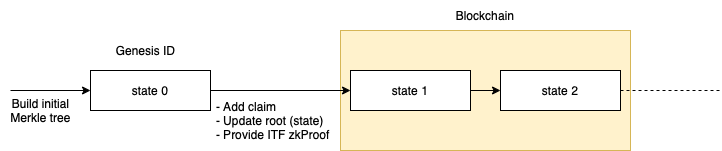

Iden3 protocol specs (version 0)
These specifications are still being built and updated regularly. Consider it work in progress.
Basis
Glossary
- Issuer: an actor who makes a claim.
- Holder: an actor who has received a claim.
- Verifier: an actor who verifies if the content of a claim is issued by a specific identity and held by another specific identity.
- Credential: data that is needed to prove that a claim is issued by a specific identity and held by another specific identity. This data is composed of a claim and a proof.
MerkleTree
A Merkle tree (MT) or hash tree is a cryptographically verifiable data structure where every "leaf" node of the tree contains the cryptographic hash of a data block, and every non-leaf node contains the cryptographic hash of its child nodes.
The MTs used in the protocol has a few particularities: - Binary: each node can only have two children. - Sparse and Deterministic: the contained data is indexed, and each data block is placed at the leaf that corresponds to that data block's index, so insert order doesn't influence the final Merkle Tree Root. This also means that some nodes are empty. - ZK friendly: the used hash function, poseidon, plays well with the Zero-Knowledge proofs (ZKP) used in different parts of the protocol.
In order to ensure that these particularities are respected and to have a history of all changes that occurred on different trees (without revealing the actual content stored in the leaves), the root of each MT is indirectly stored on the blockchain. EVM-based blockchains are chosen for this purpose.
The Merkle Tree specification is defined in this document. In the future, the MT implementation could be changed.
Zero-Knowledge proof (ZKP)
In cryptography, a zero-knowledge proof is a method by which one party (the prover) can prove to another party (the verifier) that prover knows a value x that fulfills some constraints, without revealing any information apart from the fact that he/she knows the value x.
The technologies that implement these methods are evolving rapidly. As of now, the protocol uses zkSNARKs Groth16, but in the future, the zk protocol could be changed. zkSNARK stands for "Zero-Knowledge Succinct Non-Interactive Argument of Knowledge", and have the following properties:
- Non-interactive: with a single message (credential) from the prover, the verifier can verify the proof. This is good because it allows sending proofs to a smart contract that can verify them immediately.
- Efficient verification: it's computationally efficient to verify proofs, both in terms of size and operations. This is good for the protocol because verification happens on the blockchain with its inherent costs.
- Heavy proof generation: generating a proof is computationally very expensive and can be time-consuming even with powerful hardware.
- Setup: a pre-existing setup between the prover and verifier is required for the construction of zkSNARKs. In order to ensure that the verifier can not cheat one has to be sure that the keys used for the setup were destroyed. There are protocols to ensure that, resulting in a "trusted setup".
More technical information about zkSNARKs on this article by Vitalik Buterin.
Claims
Definition
A claim is a statement made by one identity about another identity or itself. Each claim is composed of two parts: index and value part. Claims are stored in the leaves of an MT. The index is hashed and used to determine in which leaf position the value of the claim will be stored.
A special transition validation functions can be used to restrict how leaves are stored in the MT, e.g. make the MT append-only, so that leaves can't be updated or deleted, just added.
Properties
- It's impossible to generate a proof of a statement on behalf of an identity without its consent.
- Claims can be revoked.
- Claims can be updated by creating new versions. When a claim is revoked, no further versions can be made. Claims can be set to be updatable or not with a flag (See claim structure).
- Claims can be verified. This means that it's possible to demonstrate cryptographically that a given claim is:
- Issued by a specific identity.
- Not revoked.
- Is of the last version of that claim if it's updatable.
- There are two types of claims regarding destination
- Claims about self properties. Example: Operational Key, Ethereum Address, etc.
- Claims about another identity property
- (another) identity has a property: directional relation between an identity and a property (See claim structure: identity stored in hIndex, i_1)
- property is owned by (another) identity: directional relation between a property and an identity (See claim structure: identity stored in hValue, v_1)
NOTE: Some of these properties are only guaranteed by a transition validation function (explained above in this document).
Structure
h_i = H(i_0, i_1, i_2, i_3)
h_v = H(v_0, v_1, v_2, v_3)
h_t = H(h_i, h_v)
Index:
i_0: [ 128 bits ] claim schema
[ 32 bits ] header flags
[3] Subject:
000: A.1 Self
001: invalid
010: A.2.i OtherIden Index
011: A.2.v OtherIden Value
100: B.i Object Index
101: B.v Object Value
[1] Expiration: bool
[1] Updatable: bool
[27] 0
[ 32 bits ] version (optional?)
[ 61 bits ] 0 - reserved for future use
i_1: [ 248 bits] identity (case b) (optional)
[ 5 bits ] 0
i_2: [ 253 bits] 0
i_3: [ 253 bits] 0
Value:
v_0: [ 64 bits ] revocation nonce
[ 64 bits ] expiration date (optional)
[ 125 bits] 0 - reserved
v_1: [ 248 bits] identity (case c) (optional)
[ 5 bits ] 0
v_2: [ 253 bits] 0
v_3: [ 253 bits] 0
Reliability of a claim content
The correctness of what is said in a claim is not verifiable by the protocol, since every identity is free to claim whatever they want. Since it's possible to know which identity issued each claim, the trust / reputation that the issuer has can affect its credibility.
However, the protocol can guarantee exclusivity: there cannot be two claims with the same index. So it's impossible that an identity claims that a particular property (index part of the claim) is linked to two different identities (value part of the claim) at the same time.
Keys
Keys are cryptographic elements that can be used to sign data. In the protocol keys are used to authenticate certain interactions.
These keys require the authorization of the identity who owns them to be used. This is done by adding a claim with a specific schema, linking the key(s) with the identity.
This way each time that a key is used for signing, the identity can (and must) prove the ownership of that key and the fact that the key is not revoked.
Types of keys
- Baby Jubjub: used for authentication. This type of key is designed to be efficient when working with zkSNARKs.
The
Baby Jubjub Elliptic Curvespecification is defined in this document.
Identity
Definition
An identity is characterized by the claims, that the identity has issued, and the claims, that the identity has received from other identities, in other words: an identity is built by what the identity has said, and what others have said about the identity.
Each claim that identity issues can be cryptographically proved and verified, ensuring that the claim existed under identity at a certain timestamp.
To accomplish this (and other properties covered in this document), identities are built by MerkleTrees, where the claims are placed as the leaves, and the Root is published (indirectly through identity state) in the blockchain. With this construction, the identities can issue, update and revoke claims.
The protocol construction is designed to enable Zero-Knowledge features, which means for example that identities have the ability to prove with Zero-Knowledge the ownership of properties of claims in issued and received claims among other capabilities and verify that claim is not revoked.
Genesis ID
Description
Each identity has a unique identifier that is determined by the initial identity state (hash of its MerkleTree roots), called Genesis ID, under which the initial claims are placed, that are the ones contained in the initial state of the identity.
For the initial implementation of the protocol, the Genesis Claims Tree will contain at least a claim of authorization of the Operational key, that allows operating in the name of identity.
While an identity doesn't add, update or revoke claims after the Genesis State, its identity state does not need to be published on the blockchain, and the Genesis Claims can be verified directly against the Genesis ID, as it is built by the Merkle Root that holds that claims.
NOTE: The Genesis ID is calculated with the Identity State as a hash of Genesis Claims Tree Root, an empty Revocation Tree Root and an empty Roots Tree Root.
Identifier format
The Identifier of an identity is determined by the identity type and the Genesis Identity State, what we call the Genesis ID. This is built by creating a MerkleTree that holds the initial state claims, calculating its Root, hashing it together with an empty Revocation Tree Root and an empty Roots Tree Root. Then taking the first 27 bytes of the result and adding 2 bytes at the beginning to specify the identity type, and 2 bytes at the end for checksum. In sum, the identifier is a byte array of 31 bytes, encoded in base58.
The identity type specifies the specs that the identity follows, such as the hash function used by the identity. In this way, when the hash function changes, the identifiers of the identities will change, allowing to identify of which type and protocol is one identity.
Identifier structure:
- ID (genesis): base58 [ type | genesis_state | checksum ]
- type: 2 bytes specifying the type
- genesis_state: first 27 bytes from the identity state (using the genesis claim merkle tree)
- checksum: addition (with overflow) of all ID bytes Little Endian 16 bits ( [ type | genesis_state ] )
Identity state
The identity states are published on the blockchain under the identity identifier, anchoring the state of the identity with the timestamp when it is published. In this way, the claims of the identity can be proved against the anchored identity state at a certain timestamp. To transition from a state to another one, identities follow the transition functions.
The identity states can be published on the blockchain directly performing the transaction to publish the root, or indirectly using a Relay.
The genesis state is the initial state of any identity, and does not need to be published in the blockchain, as the claims under it can be verified against the identity identifier itself (that contains that identity state).

Identity state transition function
The ITF (Identity state Transition Function) is verified each time that the State is updated in order to ensure that the identities follow the protocol when updating the state.
Identity MerkleTree is a sparse binary tree, that only allows the addition of leaves (no edition nor deletion), and to add new claims, update through versions and revoke, needs to be done according to the ITF. To ensure this we use Zero-Knowledge proofs, in a way that when an identity is publishing a new state to the Smart Contract, also sends a zero-knowledge proof (π) proving that the ϕ is satisfied following the ITF. In this way, all the identity states published on the blockchain are validated to be following the protocol.
In the initial version of the implementation there will not be checks that trees are append-only in the Smart Contract due to the complex computation needed to generate zk-proofs of multiple claim additions, which is needed for scalability.
The full circuit can be found here: https://github.com/iden3/circuits/blob/master/circuits/idState.circom
Identity Ownership
We prove the identity ownership inside a zkSNARK proof. This means that the user can generate a zk-proof that he/she knows a private key corresponding to operational key for authorization claim added to Claims Tree, without revealing the claim and its position. This is codified inside a circom circuit, which can be used in other circuits (such as the id state update circuit).
The full circuit can be found here: https://github.com/iden3/circuits/blob/master/circuits/idOwnershipBySignature.circom
Identity key rotation
An identity can self-issue and revoke many private keys and corresponding claims of the type operational key authorization enabling key rotation in that way. To support verification of such claims identity state should be publicly available in the blockchain. An identity can publish the state to blockchain directly or via the Relay.
Any private key, for which a corresponding claim exists in the identity claims tree and does not exist in the identity revocation tree, can be used to create a zero-knowledge proof of valid credentials. Such proof should pass verification by a verifier as it is able to check the latest identity state in the blockchain.
In the same way, any valid and non-revoked identity private key can be used to create a valid zk_proof for identity state transition function.
Note: An identity may lose some privacy as far as it needs to disclose its state to a verifier, which can track all the proofs of the same identity in that way. However, this can be mitigated if the identity state is published to the blockchain via the Relay. In this case, only the Relay state needs to be disclosed to a verifier.
Identity Revocation
When identity revokes all claims of the type operational key authorization, it is considered as revoked, because this identity can no longer create proofs.
Interaction between Identity and Claims
Identity State Update
The Identity State Update is the procedure used to update information about what this Identity claims. This involves three different actions: - Add a Claim - Update Updatable Claim (by incrementing the version and changing the Claim value part) - Revoke a Claim
Definitions
IdS: Identity StateClT: Claims TreeClR: Claims Tree Root
ReT: Revocation TreeReR: Revocation Tree Root
RoT: Roots TreeRoR: Roots Tree Root
The IdS (Identity State) is calculated concatenating the roots of the three user trees:
- IdS: H(ClR || ReR || RoR)
- Where H is the Hash function defined by the Identity Type (for example Poseidon)
All trees are SMT (Sparse Merkle Tree) and use the hash function defined by the Identity Type.
- Leaves in ClT (Claims Tree) are Claims ((4 + 4) * 253 bits = 253B)
See Claims Structure
- Leaves in
ReT(Revocation Tree) are Revocation Nonce + Version (64 + 32 bits = 12B)
Revocation Tree Leaf:
leaf: [ 64 bits ] revocation nonce
[ 32 bits ] version
[157 bits ] 0
- Leaves in
RoT(Roots Tree) are tree Roots (from the Claims Tree) (253 bits ≈ 32B)
Roots Tree Leaf:
leaf: [253 bits ] tree root

Identity State Diagram for Direct Identity
As seen in the diagram, only the IdS is stored in the Blockchain. In order
to save stored bytes in the blockchain, it is desirable that only one "hash"
representing the current state of the Identity is stored in the Smart Contract.
This one "hash" is the IdS (Identity State), which is linked to a timestamp
and a block in the blockchain.
All the public data must be made available for any Holder so that
they can build fresh merkle tree proofs of both the ReT and RoT. This
allows the Holder to:
- Prove recent non-revocation / "current" version without interaction with the issuer.
- Hide a particular
ClRfrom all theClRs, to avoid allowing the issuer to discover a Claim hidden behind a ZK proof. For this purposeClRadded toRoR
The place and method to access the publicly available data is specified in the Identities State Smart Contract. Two possible initial options are:
- IPFS, by adding a link to an IPNS address (example:
ipfs://ipns/QmSrPmbaUKA3ZodhzPWZnpFgcPMFWF4QsxXbkWfEptTBJd) which contains a standardized structure of the data. - HTTPS, by adding a link to an HTTPS endpoint (example:
https://kyc.iden3.io/api/v1/public-state/aabbccddwhich offers the data following a standardized API.
Publish Claims
Publishing a Claim involves first adding a new leaf to the ClT, which updates
the Identity ClR. Claims can be optionally published in batches, adding more
than one leaf to the ClT in a single transaction. After the ClT has been
updated, the Identity must follow an Identity State Update so that anyone is
able to verify the newly added Claims. This involves adding the new ClR to
the RoT which in turn will update the RoR. Afterwards, the new IdS is
calculated and through a transaction it is updated in the Identities State
Smart Contract (from now on, referred to as "the Smart Contract") in the
blockchain. Once the updated IdS is in the Smart Contract, anyone can verify
the validity of the newly added Claims.
The updating procedure of the IdS in the Smart Contract can be achieved
through the following means with the following properties:
- Bad scalability (no batch), good privacy, correctness: The identity uploads
the new IdS to the Smart Contract, with a proof of a correct transition from
the old IdS to the new one. Only one claim is added to the ClT in the
transition.
- Good scalability (batch), good privacy, correctness: Same as before, but
many claims are added (batch) in the transition (with a single proof for all
newly added claims)
- Good scalability (batch), good privacy, no correctness: The identity uploads
the new IdS to the Smart Contract, without proving correctness on the
transition.
The correctness properties mentioned here are the following: - Revocation of a Claim can't be later undone - Updatable Claims are only updated with increasing versions, and only one version is valid at a time.
The choice of having correctness guarantees or not is specified in the Identity Type, so that any Verifier knows about the guarantees provided by the protocol for the Issuer Claims.
NOTE: Good scalability refers to the verification process and the costs related to the Smart Contract. Batching with zkSNARKs can have a high computation load to the prover.
Revocation tree
Sometimes it's desirable for an Identity to invalidate some statement made through a Claim. For regular Claims, this involves revoking, a process that's ideally irreversible, and allows any verifier to be aware that an already published Claim is made invalid by the Issuer Identity. Similarly, for updatable Claims, there must be a mechanism to invalidate old versions when a new one is published. Since confirming the current validity of a Claim is a parallel process to confirming that a Claim was published at some point, the "current validation" process can be separated.
Separating these two processes allows a design in which the ClT (Claim Tree)
remains private, but the revocation/version information is public, allowing a
holder to generate a fresh proof of "current validity" without requesting
access to the private ClT.
To achieve this, every Identity has a ClT (Claim Tree) and a separate ReT
(Revocation Tree). While the claim tree would be private and only the root
public, the revocation tree would be entirely public. The roots of both trees
(ClT and ReT) are linked via the IdS (Identity State) which is published
in the Smart Contract. The revocation tree could be published in IPFS or any
other public storage system.
Proving that a claim is valid (and thus not revoked/updated) is separated into
two proofs:
1. Prove that the claim was issued at some time T (this proof is generated once
by the issuer and uses a IdS-ClR at time T stored in the Smart Contract)
2. Prove that the claim has not been revoked/updated recently (this proof is
generated by the holder with a recent ReR (Revocation Tree Root) by
querying the public ReT (Revocation Tree), and verified against a recent
IdS).
Revoke Claims
In order to not reveal anything about the content of the claim in the
ReT, the Claim contains a revocation nonce in the value part, which
is added as a leaf in the ReT to revocate the Claim.
In order to forbid undoing revocation of a claim, the ReT needs to follow some
transition rules like ClT, enforced by a ZK proof (for space and verification
efficiency).
Apart from the revoking procedure, there's a method to define the validity of a Claim based on expiration, by explicitly setting an expiration date in the Claim (See Claim Structure). Revoking and Expiration are compatible methods to invalidate Claims.
Update Claims
To update a Claim, first, a new Claim is added to the ClT with an increased version
value in the index position in the claim (notice that the previous version of the
claim is not touched). Then, a leaf is added to the ReT containing the revocation
nonce and the maximum invalid version (that is, all Claims with that nonce and
version equal or lower to the one in the leaf are invalid). This means that
when a Claim is updated, the same revocation nonce is used in the Claim.
In order to forbid downgrading the version of a Claim, and forcing to have only
one valid updatable Claim at a time, the ReT needs to follow some transition
rules like the ClT does, enforced by a ZK proof (for space and verification
efficiency).
Updating and Revoking are compatible methods to invalidate Claims: an updatable Claim can be revoked, meaning that no future (or past) updates will be valid.
In case when a claim needs to be revoked completely, without possibility to update.
The maximum version and the revocation nonce should be added to ReT
Prove Claims (Credentials)
Nomenclature - MTP: Merkle Tree Proof. The list of siblings in a path from a leaf to the root.
Prove that a claim was issued at time at least t
- Requires proving a link between the Claim and an
IdS_t(Identity State at time t) published in the Smart Contract. This proof requires:- Claim
- t
- MTP Claim ->
ClR_t RoR_t(Roots Tree at time t)ReR_t(Revocation Tree Root at time t)IdS_t
Where t is any time.
Prove that the claim is currently valid
Prove that a claim hasn't been recently revoked
Where t is a recent time.
- Requires proving the inexistence of a link between the Claim revocation nonce
and a recent
IdS_t(tmust be recent according to the verifier requirements [1]) published in the Smart Contract. This proof requires:- Claim (Nonce)
- t
- MTP !Nonce ->
ReR_t ClR_tRoR_tIdS_t
[1] The verifier needs to decide a time span to define how recent the
IdS_t used in the proof needs to be. Always requiring the current IdS
could lead to data races, so it's better to require an IdS that is no more
than X hours old.
Proof of last version
This is very similar to proving that a claim hasn't been recently revoked, except that not only the nonce in the claim is checked, but also the version.
- Requires proving the inexistence of a link between the Claim revocation nonce
- version and a recent
IdS_t(tmust be recent according to the verifier requirements [1]) published in the Smart Contract. This proof requires:- Claim (Nonce, Version)
- t
- MTP !(Nonce, Version) ->
ReR_t ClR_tRoR_tIdS_t
Where t is a recent time.
Proof of non-Expiration
A Claim can be expirable by setting the expiration flag in the options and specifying an expiration date in unix timestamp format in the corresponding claim value part (see Claim Format).
Zero-Knowledge proof of valid Credential
A Zero-Knowledge proof allows hiding some information about a Claim while proving that it was issued by a particular Identity and that it's currently valid. The same checks performed in the following sections are done: - Prove that a claim was issued at time at least t - Prove that the claim is currently valid
In the proof that shows "that a claim was issued at time at least t" there's an
additional part that is added to hide the particular IdS_t1 that is used (in
order to hide the Claim from the Issuer, See Appendix Title 2). The proof then
requires:
- Claim
- t
- MTP Claim -> ClR_t1
- RoR_t1 (Roots Tree at time t1)
- ReR_t1 (Revocation Tree Root at time t1)
- IdS_t1
- MTP ClR_t1 ->RoR_t2
- ClR_t2 (Claims Tree Root at time t2)
- ReR_t2 (Revocation Tree Root at time t2)
- IdS_t2
Where t1 is a any time and t2 is a recent time.
The full circuit can be found at: https://github.com/iden3/circuits/blob/master/circuits/credential.circom
Identities Communications
Issuer - Holder (Credential Request procedure)
The same procedure works for already issued claims, and new claims: - The Issuer has issued a claim linking a property to the Holder, and the Holder requests the credential of the issued claim. - The Holder requests the issue of a new claim linking a property to the Holder.
NOTE: In http, use polling to resolve the "Future". In async messaging, request the resolution of the "Future" and wait for the reply.
Direct Claims
Indirect Claims
Holder - Verifier
- Verifier requests a claim (or in general, a proof that involves some claims).
- Holder shows a proof of the claim (or in general, a proof that involves some claims) to the Verifier.